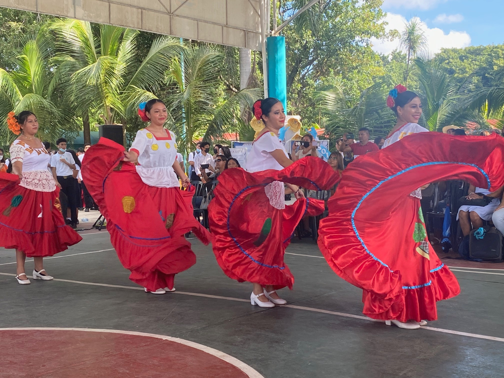
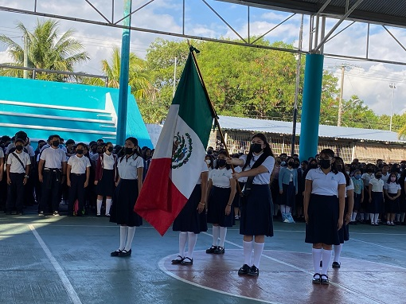

COLEGIO
¡conoce las instalaciones de la mejor escuela en Q. ROO!

Una de las cosas increibles que tiene el plantel son sus instalaciones, algo que se refelja gracias al cuidado y mantenimiento de salones, laboratorios, cooperativas, domos, patios, baños, etc.
actualmente tienen computadoras actualizadas y otras que funcionan para cualquier actividad con los profesores.
por otro lado se destacan en eventos deportivos o culturales para tener esa union de los alumnos con profesores y hasta concursos en la gran mayoria de los casos donde resaltan los paraescolares artisticos.
El segundo Plantel en crearse fue el de Cancún, el cual inició sus actividades en septiembre de 1981, que al inicio de sus actividades tuvo una matrícula de 98 alumnos distribuidos en 2 grupos. Las Capacitaciones para el Trabajo fueron tres: Admón. de Rec. Humanos, Admón. de Emp. Turísticas, Dibujo Arquitectónico, el personal con que contaba en ese entonces estaba constituido por 8 Administrativos y 13 Docentes

Tambien la mayoria de salon ya tienen establecidos aire acondicionados para refrescar y no acalorarse, desde mi perspectivan yo digo que falta mejorar la limpieza de los pasillos o domos para lucir el lugar, eso si hay una gran flora que hasta tiene apuntado en algunos arboles su nombre y su nombre cientifico.
esta escuela es muy reconocida por su gran disciplina y responsabilidad en cuanto a los estudiantes y buenos profesores que dejan sus enseñanzas a cada alumno del plantel